实验流程来自 知识星球：程序员踩坑案例分享
创建连接
sudo tcpdump -s0 -X -nn "tcp port 9527" -w vm-1-tcp.pcap --print
vm-1-tcp.pcap
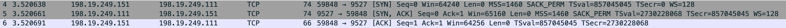
当时碰到个问题，在 vm-1 用 "nc -k -l vm-1 9527"，vm-2 连接 vm-1 时 vm-1 窗口收不到消息
在两台 vm 里 hosts 文件加了对端的机器名和 ip
vm-1
198.19.249.151 vm-2
vm-2
198.19.249.111 vm-1
vm-1 上抓包看下
sudo tcpdump -s0 -X -nn "tcp port 9527" -w vm-1-tcp-nc-localhost.pcap --print
vm-1-tcp-nc-localhost.pcap
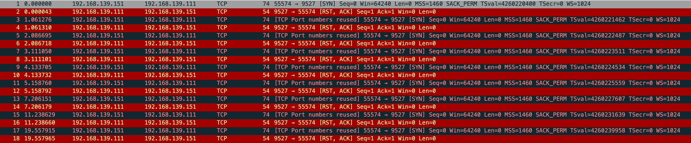
在看 vm-1 监听的情况
sudo netstat -anpt
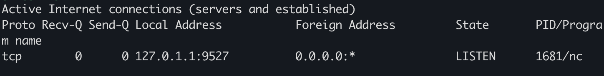
监听 127.0.0.1 去了，另外一块网卡没监听
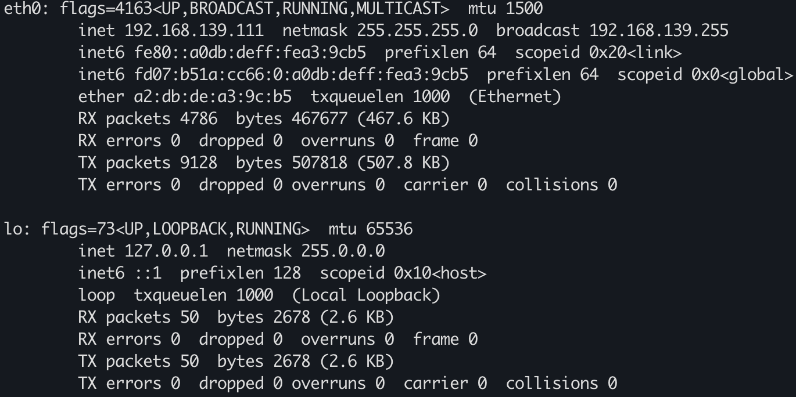
vm-2 发 syn 给 vm-1，vm-1 直接回了个 rst，然后 vm-1 根据 net.ipv4.tcp_syn_retries 不停的重试
sudo sysctl -a|grep net.ipv4.tcp_syn_retries
net.ipv4.tcp_syn_retries = 6
但是我抓包发现会重传 10 次 共 11 个包
再次抓包验证
sudo tcpdump -s0 -X -nn "tcp port 9527" -w vm-1-tcp-nc-localhost-retries.pcap --print
vm-1-tcp-nc-localhost-retries.pcap
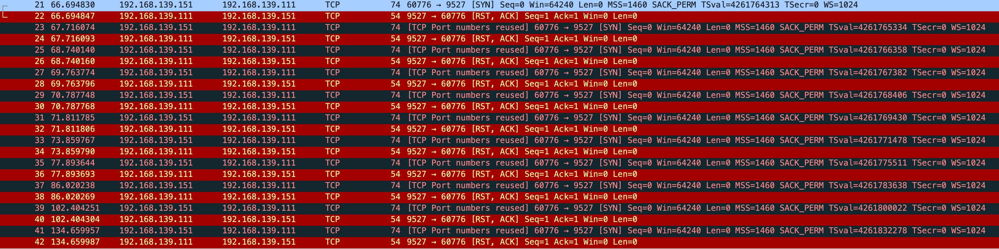
很奇怪，和 net.ipv4.tcp_syn_linear_timeouts=6 的现象不一样，正常只应该有 7 个包，一个正常 syn 和 6 个重试
这时还有一个现象，正常来说 “指数退避” 应该是 1 2 4 8，但抓包前 4 次均是相隔 1s，第5个重试包才相隔 2s，根据这个现象和当前内核版本查询到
net.ipv4.tcp_syn_linear_timeouts
tcp_syn_linear_timeouts - INTEGER
The number of times for an active TCP connection to retransmit SYNs with a linear backoff timeout before defaulting to an exponential backoff timeout. This has no effect on SYNACK at the passive TCP side.
With an initial RTO of 1 and tcp_syn_linear_timeouts = 4 we would expect SYN RTOs to be: 1，1，1，1，1，2，4，... (4 linear timeouts，and the first exponential backoff using 2^0 * initial_RTO). Default: 4
这就对了，后面更改 net.ipv4.tcp_syn_linear_timeouts 在继续测试
sudo sysctl -w net.ipv4.tcp_syn_retries=6 net.ipv4.tcp_syn_linear_timeouts=1
正常是 10 次，现在应该是 7 次
sudo tcpdump -s0 -X -nn "tcp port 9527" -w vm-1-tcp-nc-localhost-retries-syn-linear.pcap --print
vm-1-tcp-nc-localhost-retries-syn-linear.pcap
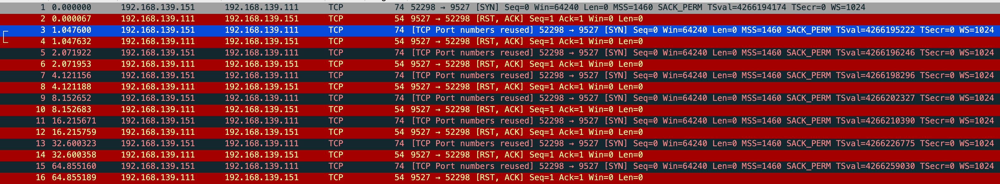
while true;do sudo netstat -anpo|grep 9527;sleep 1;done
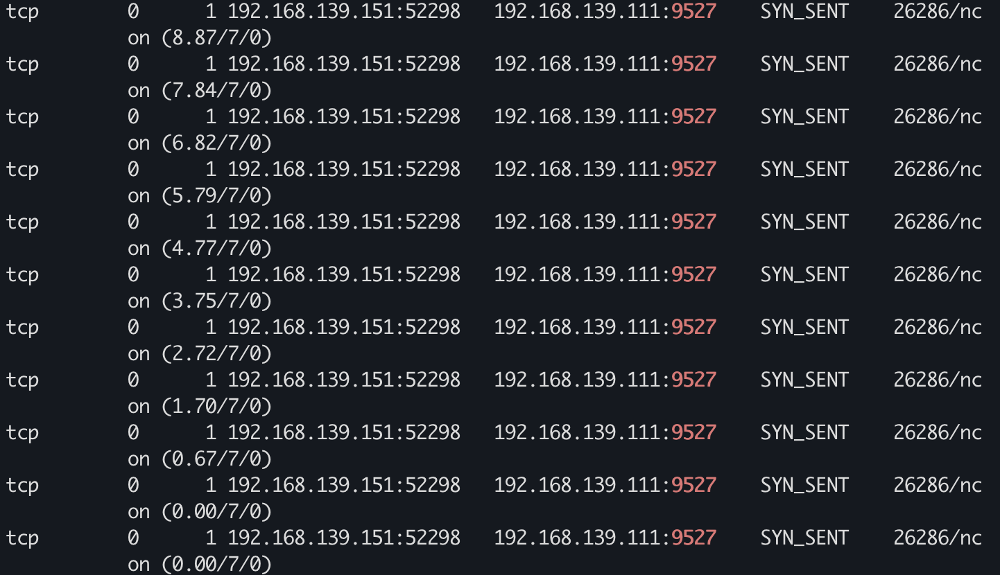
没错到7次自动停了
后面改成 nc -k -l 192.168.139.111 9527 直接就通了
观测 SYN_SENT
vm-1 使用 iptables drop vm-2 发来的 syn 包
sudo iptables -A INPUT -p tcp --dport 9527 -j DROP
sudo tcpdump -s0 -X -nn "tcp port 9527" -w vm-1-tcp-iptables-drop-9527.pcap --print
vm-1-tcp-iptables-drop-9527.pcap
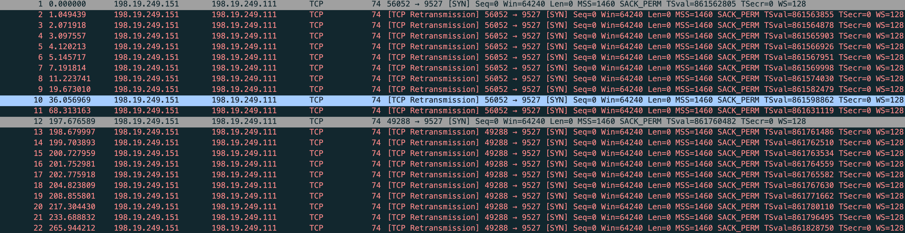
能看到这回是 tcp retransmission，重传了 10 次 依旧是这两个参数控制
net.ipv4.tcp_syn_retries
net.ipv4.tcp_syn_linear_timeouts
能看到 vm-2 连接状态 SYN_SENT
观测 SYN_RECV
需要在 vm-2 drop 从 vm-1 传过来的 SYN+ACK 包，这样 vm-2 收不到 SYN+ACK 就没办法回 ACK，vm-1 也没办法将三次握手完成
sudo iptables -A INPUT -p tcp --sport 9527 -j DROP
改用 nmap 测试连接
sudo nmap -sS 192.168.139.111 -p 9527
vm-1 查看连接状态
while true;do sudo netstat -anpo|grep 9527;sleep 1;done
sudo tcpdump -s0 -X -nn "tcp port 9527" -w vm-1-tcp-iptables-vm2-drop-9527.pcap --print
vm-1-tcp-iptables-vm2-drop-9527.pcap
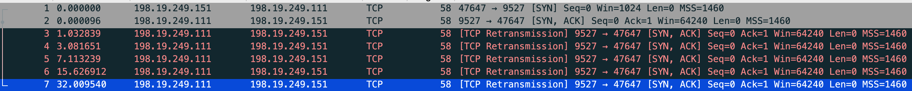
能看到 vm-2 >(SYN) vm-1，vm-1 >(SYN+ACK) vm-2，然后 vm-1 一直在重试，试了5次
net.ipv4.tcp_synack_retries 默认是5
tcp_synack_retries - INTEGER
Number of times SYNACKs for a passive TCP connection attempt will be retransmitted. Should not be higher than 255. Default value is 5, which corresponds to 31seconds till the last retransmission with the current initial RTO of 1second. With this the final timeout for a passive TCP connection will happen after 63seconds.
文中提到：SYN FLOOD
客户端发了 1 个 SYN 到服务端，如果客户端不响应那服务端就会重试 5 次，一台机器是 5 次如果机器多服务端资源很快就会被消耗
文中提到：如果只使用 iptables 拦截第二次握手包的话，会导致源端协议栈 SYN 重传的，这样就没法测试 SYN+ACK 重传了。所以发送端在发完 SYN 包后不能有其他逻辑。nc 做不到只发送 SYN 包就退出，改用 nmap 来进行实验。
复现下 用 nc 然后抓包
sudo tcpdump -s0 -X -nn "tcp port 9527" -w vm-1-tcp-iptables-vm2-drop-9527-nc.pcap --print
vm-1-tcp-iptables-vm2-drop-9527-nc.pcap
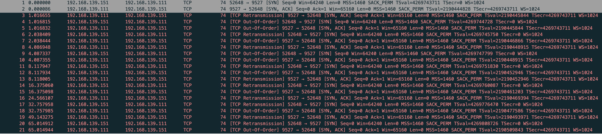
果然 vm-2 在重传
SYN Queue
借用下文中的图
（图片来自：https://www.emqx.com/en/blog/emqx-performance-tuning-tcp-syn-queue-and-accept-queue）
验证下半连接队列长度，修改相关的内核参数
sudo sysctl -w net.ipv4.tcp_syncookies=0 net.ipv4.tcp_max_syn_backlog=4 net.core.somaxconn=8
vm-2 测试
while true;do sudo nmap -sS 192.168.139.111 -p 9527;done
vm-1 查看状态，又和修改的内核参数对应不上
$ sudo netstat -anpo|grep RECV
tcp 0 0 192.168.139.111:9527 192.168.139.151:35013 SYN_RECV - on (1.82/2/0)
tcp 0 0 192.168.139.111:9527 192.168.139.151:57984 SYN_RECV - on (1.76/2/0)
半连接取值的规则是这样
min(backlog, net.core.somaxconn, net.ipv4.tcp_max_syn_backlog)
syn_backlog 和 somaxconn 设置的都不是 2，唯一有关系的就是 backlog，backlog没有改直接用的 nc
nc -k -l 192.168.139.111 9527
$ sudo ss -anpt
State Recv-Q Send-Q Local Address:Port Peer Address:Port Process
LISTEN 0 1 192.168.139.111:9527 0.0.0.0:* users:(("nc",pid=37710,fd=3))
关于 ss 的 Send-Q 解释
High Send-Q means the data is put on TCP/IP send buffer, but it is not sent or it is sent but not ACKed
表示数据在 tcp/ip 发送缓存中，但未发送或已发送但未 ack
对比我们情况就是 vm-2 拦截了 vm-1 发过来的 syn+ack，未回复 ack
也就是 nc 的 backlog 设置的是 1，server 的半连接队列只允许有1个等待
用 go 写一个
package main
import (
"fmt"
"log"
"net"
"time"
)
func main() {
fmt.Print("h")
conn，err := net.Listen("tcp4"，"0.0.0.0:9527")
if err != nil {
panic(err)
}
defer conn.Close()
log.Println("listen :9527 success")
for {
time.Sleep(time.Second * 10)
}
}
$ sudo ss -anpt
State Recv-Q Send-Q Local Address:Port Peer Address:Port Process
LISTEN 0 8 0.0.0.0:9527 0.0.0.0:* users:(("s",pid=37717,fd=4))
能看到 send-q 是 8，根据公示 min(backlog, net.core.somaxconn, net.ipv4.tcp_max_syn_backlog)，somaxconn 是 8，syn_backlog 是 4
我们把内核参数恢复默认看下 go server 的默认 backlog
$ sudo sysctl -a|grep tcp_syncookies;sudo sysctl -a|grep max_syn_backlog;sudo sysctl -a|grep net.core.somaxconn
net.ipv4.tcp_syncookies = 1
net.ipv4.tcp_max_syn_backlog = 512
net.core.somaxconn = 4096
$ sudo ss -anpt
State Recv-Q Send-Q Local Address:Port Peer Address:Port Process
LISTEN 0 4096 0.0.0.0:9527 0.0.0.0:* users:(("s",pid=318,fd=4))
现在唯一的问题是最小应是4，通过 ss -anpt 查看显示是8，我们访问测试下，改完内核参数记得重新运行服务
$ while true;do sudo nmap -sS 192.168.139.111 -p 9527;done
$ sudo ss -anpt
State Recv-Q Send-Q Local Address:Port Peer Address:Port Process
LISTEN 0 8 0.0.0.0:9527 0.0.0.0:* users:(("s",pid=344,fd=4))
$ sudo netstat -anpo | grep SYN_RECV | wc -l
4
$ sudo ss -anpt|grep 9527
LISTEN 0 8 0.0.0.0:9527 0.0.0.0:* users:(("s",pid=344,fd=4))
SYN-RECV 0 0 192.168.139.111:9527 192.168.139.151:53165
SYN-RECV 0 0 192.168.139.111:9527 192.168.139.151:33241
SYN-RECV 0 0 192.168.139.111:9527 192.168.139.151:50404
SYN-RECV 0 0 192.168.139.111:9527 192.168.139.151:46060
能看到队列里是4，那上面的就是取值问题
netstat -s 能看到丢弃了多少 syn
$ sudo netstat -s | grep -E "LISTEN|overflowed"
85 SYNs to LISTEN sockets dropped
Accept Queue
全连接队列最大长度
min(backlog, net.core.somaxconn)
vm-1
import socket
import time
def start_server(host, port, backlog):
server = socket.socket(socket.AF_INET, socket.SOCK_STREAM)
server.bind((host, port))
server.listen(backlog)
while True:
time.sleep(1)
if __name__ == '__main__':
start_server('192.168.139.111', 9527, 8)
vm-2
import socket
import time
def connect_and_hold(host, port, count):
cli_list = []
try:
for i in range(count):
cli = socket.socket(socket.AF_INET, socket.SOCK_STREAM)
cli.connect((host, port))
cli_list.append(cli)
except Exception as e:
print(f"Failed to connect: {e}")
while True:
time.sleep(1)
if __name__ == '__main__':
connect_and_hold('192.168.139.111', 9527, 10)
清理掉之前的 iptables 规则，分别启动测试
$ sudo netstat -s|grep -E "LISTEN|overflow"
6 times the listen queue of a socket overflowed # 全连接丢弃的包
91 SYNs to LISTEN sockets dropped
vm-1
$ sudo netstat -anpo|grep -E "Recv-Q|9527"
Proto Recv-Q Send-Q Local Address Foreign Address State PID/Program name Timer
tcp 9 0 192.168.139.111:9527 0.0.0.0:* LISTEN 407/python3 off (0.00/0/0)
tcp 0 0 192.168.139.111:9527 192.168.139.151:54468 ESTABLISHED - off (0.00/0/0)
tcp 0 0 192.168.139.111:9527 192.168.139.151:54524 ESTABLISHED - off (0.00/0/0)
tcp 0 0 192.168.139.111:9527 192.168.139.151:54516 ESTABLISHED - off (0.00/0/0)
tcp 0 0 192.168.139.111:9527 192.168.139.151:54478 ESTABLISHED - off (0.00/0/0)
tcp 0 0 192.168.139.111:9527 192.168.139.151:54464 ESTABLISHED - off (0.00/0/0)
tcp 0 0 192.168.139.111:9527 192.168.139.151:54494 ESTABLISHED - off (0.00/0/0)
tcp 0 0 192.168.139.111:9527 192.168.139.151:54508 ESTABLISHED - off (0.00/0/0)
tcp 0 0 192.168.139.111:9527 192.168.139.151:54536 ESTABLISHED - off (0.00/0/0)
tcp 0 0 192.168.139.111:9527 192.168.139.151:54496 ESTABLISHED - off (0.00/0/0)
vm-2
$ sudo netstat -anpo|grep -E "Recv-Q|9527"
Proto Recv-Q Send-Q Local Address Foreign Address State PID/Program name Timer
tcp 0 0 192.168.139.151:54464 192.168.139.111:9527 ESTABLISHED 33260/python3 off (0.00/0/0)
tcp 0 0 192.168.139.151:54468 192.168.139.111:9527 ESTABLISHED 33260/python3 off (0.00/0/0)
tcp 0 0 192.168.139.151:54478 192.168.139.111:9527 ESTABLISHED 33260/python3 off (0.00/0/0)
tcp 0 0 192.168.139.151:54494 192.168.139.111:9527 ESTABLISHED 33260/python3 off (0.00/0/0)
tcp 0 0 192.168.139.151:54496 192.168.139.111:9527 ESTABLISHED 33260/python3 off (0.00/0/0)
tcp 0 0 192.168.139.151:54508 192.168.139.111:9527 ESTABLISHED 33260/python3 off (0.00/0/0)
tcp 0 0 192.168.139.151:54516 192.168.139.111:9527 ESTABLISHED 33260/python3 off (0.00/0/0)
tcp 0 0 192.168.139.151:54524 192.168.139.111:9527 ESTABLISHED 33260/python3 off (0.00/0/0)
tcp 0 0 192.168.139.151:54536 192.168.139.111:9527 ESTABLISHED 33260/python3 off (0.00/0/0)
tcp 0 1 192.168.139.151:54538 192.168.139.111:9527 SYN_SENT 33260/python3 on (0.81/7/0)
没错，vm-2 的第10个包 SYN_SENT 在重传
也就是全连接满了 半连接是不接收直接drop掉的
观测下全连接不满，半连接什么情况
vm-2 的连接改成6
vm-1
$ sudo netstat -anpo|grep -E "Recv-Q|9527"
Proto Recv-Q Send-Q Local Address Foreign Address State PID/Program name Timer
tcp 6 0 192.168.139.111:9527 0.0.0.0:* LISTEN 463/python3 off (0.00/0/0)
tcp 0 0 192.168.139.111:9527 192.168.139.151:51454 ESTABLISHED - off (0.00/0/0)
tcp 0 0 192.168.139.111:9527 192.168.139.151:51402 ESTABLISHED - off (0.00/0/0)
tcp 0 0 192.168.139.111:9527 192.168.139.151:51440 ESTABLISHED - off (0.00/0/0)
tcp 0 0 192.168.139.111:9527 192.168.139.151:51426 ESTABLISHED - off (0.00/0/0)
tcp 0 0 192.168.139.111:9527 192.168.139.151:51418 ESTABLISHED - off (0.00/0/0)
tcp 0 0 192.168.139.111:9527 192.168.139.151:51450 ESTABLISHED - off (0.00/0/0)
vm-2 拦截 vm-1 过来的 syn+ack
$ sudo iptables -A INPUT -p tcp --sport 9527 -j DROP
$ nc 192.168.139.111 9527
vm-1 能看到这个 SYN_RECV 在重试，也就是进了半连接队列，因为 vm-2 拦截了 vm-1 过来的包，vm-2 不会给 vm-1 发送 ack，vm-1 就会一直重试
$ sudo netstat -anpo|grep -E "Recv-Q|9527"
Proto Recv-Q Send-Q Local Address Foreign Address State PID/Program name Timer
tcp 6 0 192.168.139.111:9527 0.0.0.0:* LISTEN 463/python3 off (0.00/0/0)
tcp 0 0 192.168.139.111:9527 192.168.139.151:51454 ESTABLISHED - off (0.00/0/0)
tcp 0 0 192.168.139.111:9527 192.168.139.151:40638 SYN_RECV - on (12.04/4/0)
tcp 0 0 192.168.139.111:9527 192.168.139.151:51402 ESTABLISHED - off (0.00/0/0)
tcp 0 0 192.168.139.111:9527 192.168.139.151:51440 ESTABLISHED - off (0.00/0/0)
tcp 0 0 192.168.139.111:9527 192.168.139.151:51426 ESTABLISHED - off (0.00/0/0)
tcp 0 0 192.168.139.111:9527 192.168.139.151:51418 ESTABLISHED - off (0.00/0/0)
tcp 0 0 192.168.139.111:9527 192.168.139.151:51450 ESTABLISHED - off (0.00/0/0)
当全连接没满，半连接是可以接收的
文中描述
net.ipv4.tcp_abort_on_overflow
此值为 0 表示握手到第三步时全连接队列满时则扔掉客户端发过来的 ACK 包。但是客户端那边因为握手包已经发出，已经自动进入 ESTABLISHED 状态准备传输数据了。服务端丢弃了 ACK 包后这个链接还是处于 SYN_RECV 状态的（如果此时客户端发数据，服务端会直接丢弃。客户端就开始重传，此时的重传次数受内核的 net.ipv4.tcp_retries2 参数控制）；
此值为 1 则直接给客户端发送 RST 包直接断开连接。
这里强调下，这个参数只在半连接队列往全连接队列移动时才有效。而全连接队列已经满的情况下，内核的默认行为只是丢弃新的 SYN 包（而且目前没有参数可以控制这个行为），这会导致客户端 SYN 不断重传。
默认 net.ipv4.tcp_abort_on_overflow 是 0，要想测试很难，只在半连接向全连接移动时有效。
另外握手到第三步，就是 vm-2 向 vm-1 发 ack，既要满足发送 ack 又要叫全连接是满的，也就是发送 syn+ack 时候全连接还没满，回 ack 时 vm-1 恰巧有一个比当前请求还快的握手，让 vm-1 的全连接队列满。
我尝试在 vm-1 全连接队列满的时候，发送一个正常包到 vm-1，看看 vm-1 和 vm-2 的状态
$ sudo tcpdump -s0 -X -nn "tcp port 9527" -w vm-1-tcp_abort_on_overflow.pcap --print
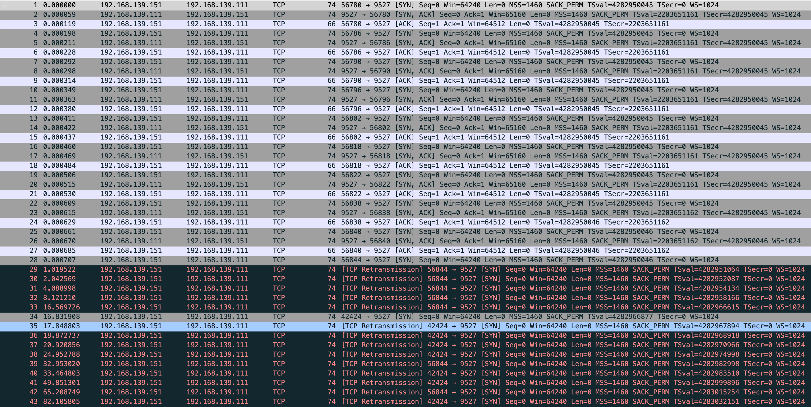
vm-1
$ sudo netstat -anpo|grep -E "Recv-Q|9527"
Proto Recv-Q Send-Q Local Address Foreign Address State PID/Program name Timer
tcp 9 0 192.168.139.111:9527 0.0.0.0:* LISTEN 538/python3 off (0.00/0/0)
tcp 0 0 192.168.139.111:9527 192.168.139.151:56822 ESTABLISHED - off (0.00/0/0)
tcp 0 0 192.168.139.111:9527 192.168.139.151:56802 ESTABLISHED - off (0.00/0/0)
tcp 0 0 192.168.139.111:9527 192.168.139.151:56786 ESTABLISHED - off (0.00/0/0)
tcp 0 0 192.168.139.111:9527 192.168.139.151:56840 ESTABLISHED - off (0.00/0/0)
tcp 0 0 192.168.139.111:9527 192.168.139.151:56838 ESTABLISHED - off (0.00/0/0)
tcp 0 0 192.168.139.111:9527 192.168.139.151:56796 ESTABLISHED - off (0.00/0/0)
tcp 0 0 192.168.139.111:9527 192.168.139.151:56790 ESTABLISHED - off (0.00/0/0)
tcp 0 0 192.168.139.111:9527 192.168.139.151:56780 ESTABLISHED - off (0.00/0/0)
tcp 0 0 192.168.139.111:9527 192.168.139.151:56818 ESTABLISHED - off (0.00/0/0)
-----------------------------------------------------------------
vm-2
$ sudo netstat -anpo|grep -E "Recv-Q|9527"
Proto Recv-Q Send-Q Local Address Foreign Address State PID/Program name Timer
tcp 0 1 192.168.139.151:42424 192.168.139.111:9527 SYN_SENT 33284/nc on (1.58/6/0)
tcp 0 0 192.168.139.151:56780 192.168.139.111:9527 ESTABLISHED 33283/python3 off (0.00/0/0)
tcp 0 0 192.168.139.151:56786 192.168.139.111:9527 ESTABLISHED 33283/python3 off (0.00/0/0)
tcp 0 0 192.168.139.151:56790 192.168.139.111:9527 ESTABLISHED 33283/python3 off (0.00/0/0)
tcp 0 0 192.168.139.151:56796 192.168.139.111:9527 ESTABLISHED 33283/python3 off (0.00/0/0)
tcp 0 0 192.168.139.151:56802 192.168.139.111:9527 ESTABLISHED 33283/python3 off (0.00/0/0)
tcp 0 0 192.168.139.151:56818 192.168.139.111:9527 ESTABLISHED 33283/python3 off (0.00/0/0)
tcp 0 0 192.168.139.151:56822 192.168.139.111:9527 ESTABLISHED 33283/python3 off (0.00/0/0)
tcp 0 0 192.168.139.151:56838 192.168.139.111:9527 ESTABLISHED 33283/python3 off (0.00/0/0)
tcp 0 0 192.168.139.151:56840 192.168.139.111:9527 ESTABLISHED 33283/python3 off (0.00/0/0)
tcp 0 1 192.168.139.151:56844 192.168.139.111:9527 SYN_SENT 33283/python3 on (48.94/7/0)
能看到 vm-1 建立9个连接后这边就停止了，没有 SYN_RECV，也就是全连接满了 半连接的请求直接被 drop
而 vm-2 通过抓包能看到 56844 python 在发送 SYN_SENT
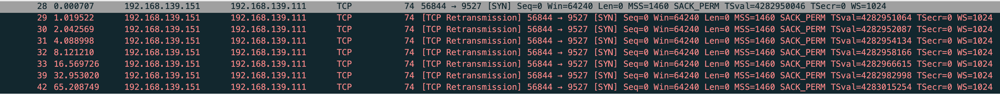
nc 的 42424 也是，全部都在重试，试了7次，正常现象 我的 net.ipv4.tcp_syn_retries = 6 net.ipv4.tcp_syn_linear_timeouts = 1
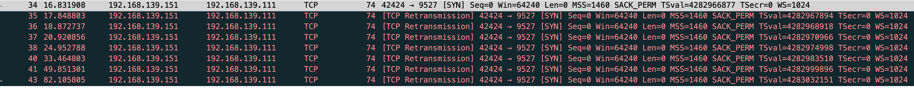
重传这里还能看到个现象：vm-1 使用 iptables 拒绝 vm-2 过来的 syn 包和全连接满了直接拒绝半连接反应的抓包是一样的，区别是一个是用户行为一个是系统行为
我将 vm-1 重启内核参数恢复默认，又启动一个nginx，能看到默认半连接 511
$ sudo ss -lnt
State Recv-Q Send-Q Local Address:Port Peer Address:Port Process
LISTEN 0 511 0.0.0.0:80 0.0.0.0:*
LISTEN 0 511 [::]:80 [::]:*
这时候如果你的nginx无法处理连接，状况大致可分为几种
- 监听了lo网卡，导致无法处理外部请求，访问会拒绝。客户端走tcp重试
- 监听了正确的网卡，但有 iptables 或安全组等拦截。客户端走tcp重试
- 监听了正确的网卡 iptables 或安全组都放行，全连接满了。系统级别直接drop连接
- 监听了正确的网卡 iptables 或安全组都放行，全连接没满半连接也没满。但新机器上来就把内核参数改了，导致半连接过小，高并发情况下 系统基本指标都正常 这会让请求处理异常吗？（这一点存在疑问后面测试下）
- 监听了正确的网卡 iptables 或安全组都放行，全连接没满半连接也没满。但这台机器的基本指标都异常比如CPU内存使用100%，这样全连接就会一直堆积 accept 很慢，导致半连接也满了。你的机器最终也就不可用了
4 问题测试 会异常 从 server 观测到 vm-2 发送了大量的 tcp 重试，同时半连接队列从系统层又drop掉很多请求
我发现这个抓包少了并不全，但也不碍事，系统层drop掉请求是对的
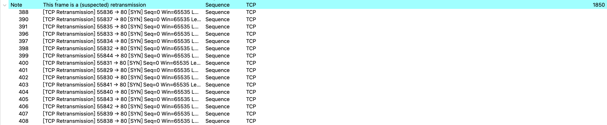
$ sudo sysctl -w net.ipv4.tcp_syncookies=0 net.ipv4.tcp_max_syn_backlog=4 net.core.somaxconn=8
net.ipv4.tcp_syncookies = 0
net.ipv4.tcp_max_syn_backlog = 4
net.core.somaxconn = 8
vm-2
$ wrk -t4 -c400 -d60s http://101.200.150.26
$ netstat -anpo|grep -E "Recv|80"
Proto Recv-Q Send-Q Local Address Foreign Address State PID/Program name Timer
tcp 0 0 0.0.0.0:80 0.0.0.0:* LISTEN 28539/nginx: master off (0.00/0/0)
tcp 0 862 172.22.7.89:80 x.x.x.x:55481 ESTABLISHED 28540/nginx: worker on (0.31/0/0)
tcp 0 862 172.22.7.89:80 x.x.x.x:56121 ESTABLISHED 28541/nginx: worker on (6.32/6/0)
$ netstat -s|grep -E "LISTEN|overflow"
5517 times the listen queue of a socket overflowed
78079 SYNs to LISTEN sockets dropped
$ netstat -s|grep -E "LISTEN|overflow"
5517 times the listen queue of a socket overflowed
78388 SYNs to LISTEN sockets dropped
还能看到在tcp连接建立以后 nginx 也做了重传，同时 Send-Q 部分为 862 byte，通过抓包分析862 恰好是 tcp 层的 tcp segment len，这个请求是 server 发往 vm-2 的响应请求，server 发给了 vm-2 还在等待 vm-2 的 ack，所以能看到 Send-Q 是 862
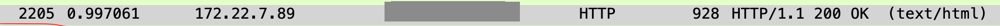
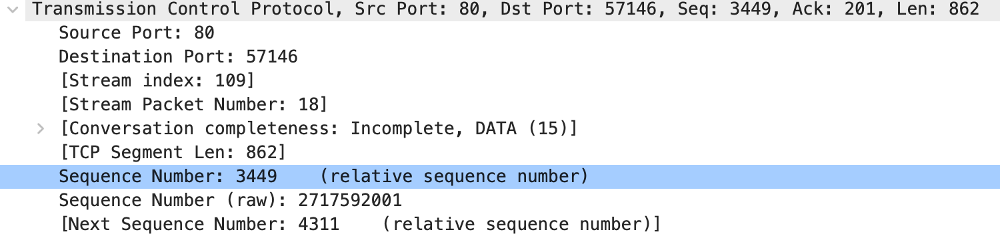
不设置内核参数，在压测下
tcpdump -s0 -X -nn "tcp port 80" -w cloudserver-wrk-no-sysctl.pcap --print
这个包是全的
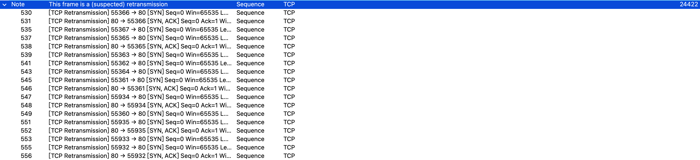
再来看系统是否有drop请求，空的 netstat -s|grep -E "LISTEN|overflow" 过滤直接没有
TcpExt:
2 invalid SYN cookies received
10 resets received for embryonic SYN_RECV sockets
42 TCP sockets finished time wait in fast timer
273 packets rejected in established connections because of timestamp
19 delayed acks sent
Quick ack mode was activated 13960 times
630 packet headers predicted
64905 acknowledgments not containing data payload received
16255 predicted acknowledgments
TCPSackRecovery: 1741
18 congestion windows recovered without slow start after partial ack